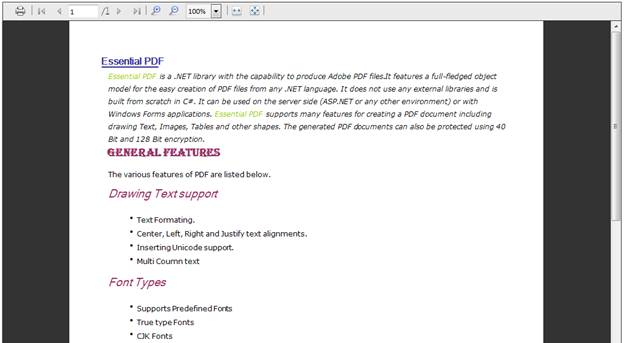

The steps to create a PDFViewer through Builder are as follows:
Step 1:
Controller:
Add the code displayed below in the HomeController.cs file. PdfViewerParams class is used to get the post parameter values for the PdfViewer. Hence, it is used as a parameter in the post action. Then, it is passed to the view through the ViewData.
|
using System; using System.Collections.Generic; using System.Linq; using System.Web; using System.Web.Mvc; using Syncfusion.PdfViewer.Mvc;
namespace MvcPdfViewerApplication.Controllers { public class HomeController : Controller {
public ActionResult Index() { return View(); }
[AcceptVerbs(HttpVerbs.Post)] public ActionResult Index(PdfViewerParams param) { //Passing the chart post parameter values to the view ViewData["PdfViewerParamsData"] = param;
return PartialView("PartialView", this.ViewData); } } }
|
Step 2:
View:
Add the code displayed below in the Index.aspx file.
|
<%@ Page Title="" Language="C#" MasterPageFile="~/Views/Shared/Site.Master" Inherits="System.Web.Mvc.ViewPage" %>
<asp:Content ID="Content1" ContentPlaceHolderID="TitleContent" runat="server"> PdfIndex </asp:Content>
<asp:Content ID="Content2" ContentPlaceHolderID="MainContent" runat="server"> <%Html.RenderPartial("PartialView"); %> </asp:Content>
|
Step 3:
PartialView:
Create a Partial View named “PartialView.ascx”, and add the code displayed below in it.
|
<%@ Control Language="C#" Inherits="System.Web.Mvc.ViewUserControl" %>
<%=Html.Syncfusion().PdfViewer("PdfViewer").Load("Pdf file Path " ).(PdfViewerModel)ViewData["PdfViewerParamsData "])%>
|
Step 4:
Run the code, to get the following output.

Figure 5: Output